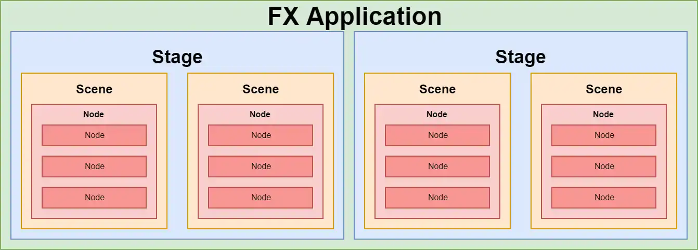
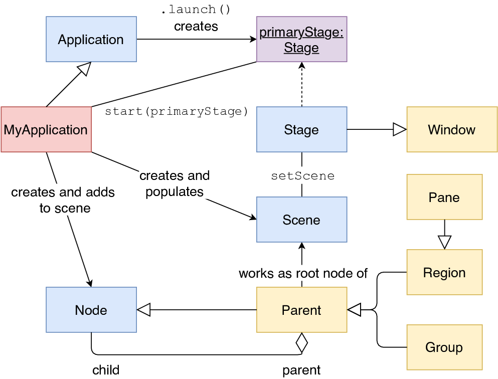
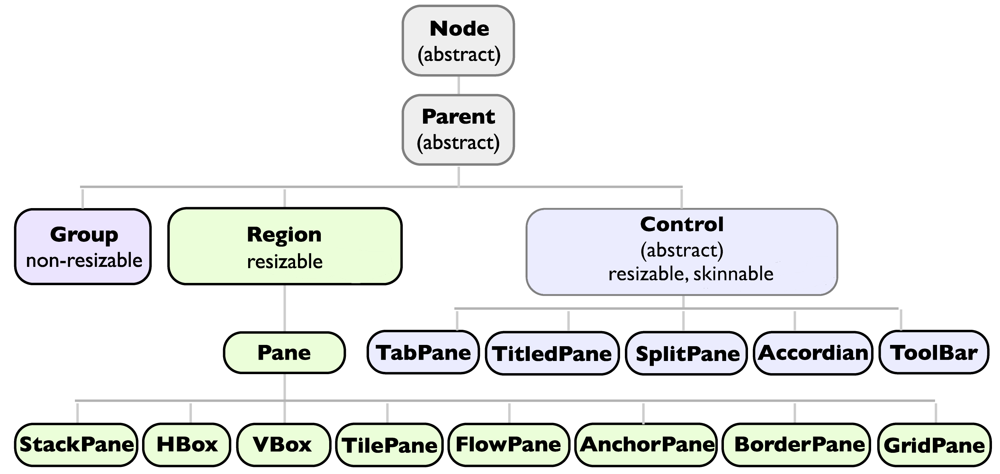
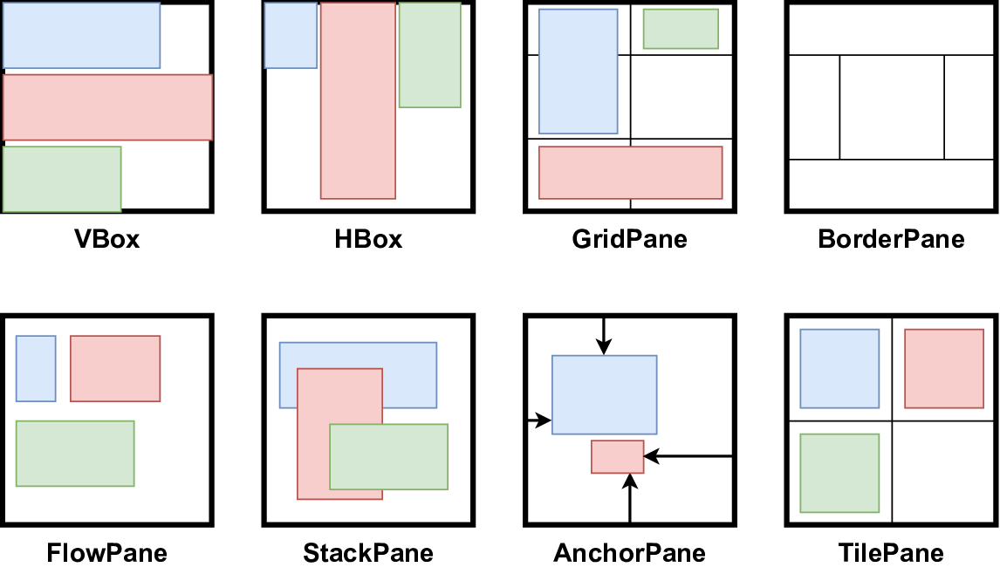
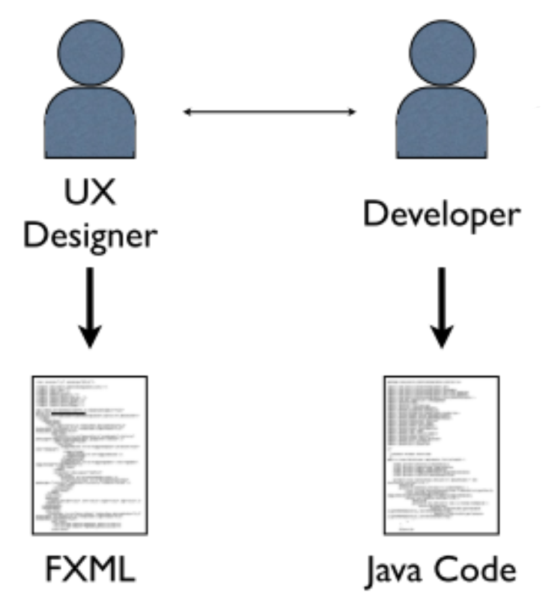
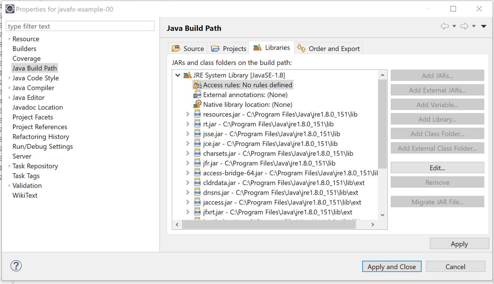
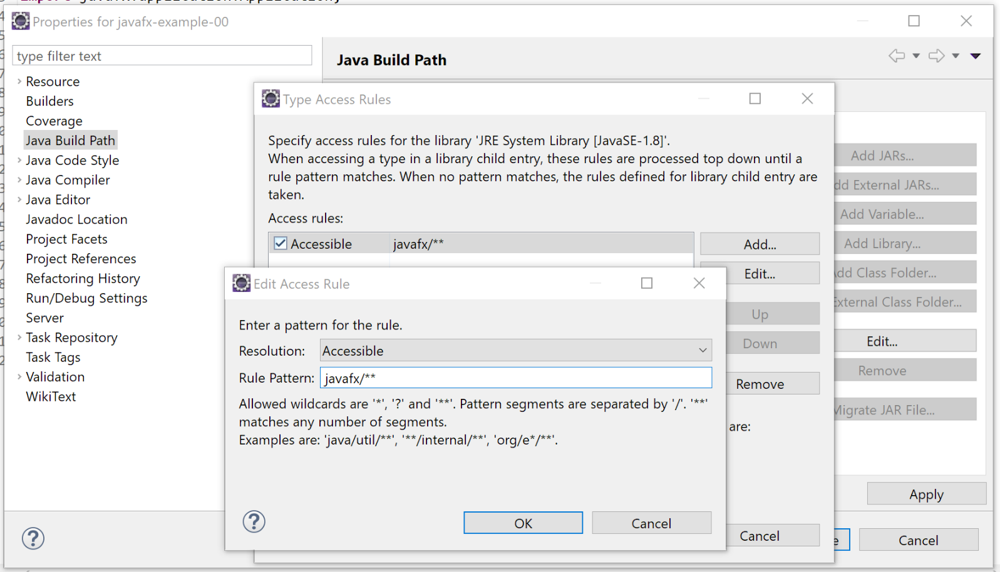
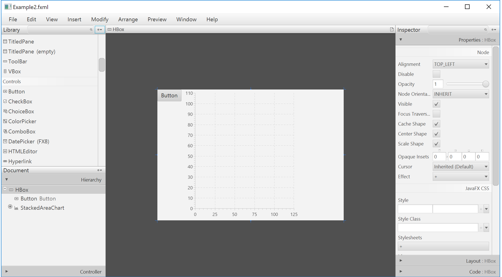

roby.casadei@unibo.itdanilo.pianini@unibo.itLibreria Java per la creazione di GUI per Rich Applications multi-piattaforma
Propone un look-and-feel personalizzabile
Consente la creazione di GUI moderne, di qualità e ben adattabili a qualunque piattaforma e supporto hardware
JFXPanel)SwingNode)SwipeEvent), in funzione della piattaforma in cui l’applicazione è in esecuzioneIl contenitore (esterno) dove la GUI sarà visualizzata
JFrame di Swinghttps://openjfx.io/javadoc/15/javafx.graphics/javafx/stage/Stage.html
Una scene rappresenta un contenuto (una pagina della GUI) visualizzabile sullo Stage
ogni Stage può avere più istanze diverse di Scene
Di fatto, è un container di Node(s)
https://openjfx.io/javadoc/15/javafx.graphics/javafx/scene/Scene.html
Application: entry point di un’applicazione JavaFX applicationinit, start, stop, …)Esempio: GUI vuota
public class App extends javafx.application.Application {
@Override
public void start(Stage stage) throws Exception {
Group root = new Group();
Scene scene = new Scene(root, 500, 300);
stage.setTitle("JavaFX Demo");
stage.setScene(scene);
stage.show();
}
}
import javafx.application.Application;
public class Main {
public static void main(String[] args) {
// App è la classe definita nella slide precedente
Application.launch(App.class, args);
}
}
main() dentro la classe App (che estende Application) può risultare nel seguente errore: “Error: JavaFX runtime components are missing, and are required to run this application” (richiederebbe l’aggiunta di JavaFX al module path all’avvio dell’applicazione)main in una classe separata da quella dell’applicazione JavaFXL’avvio mediante Application.launch(App.class) comporta:
App (la classe specificata che estende Application)start(javafx.stage.Stage)Platform.exit()Platform.isImplicitExit() è true)stop()NodeParent rappresenta nodi che possono avere figli (recuperabili via getChildren())Node: SwingNode, Canvas, ParentParent: Group (gestisce un insieme di figli; ogni trasformazione/effetto è applicata su ogni figlio), Region (classe base per tutti i controlli UI e i layout)

javafx.application.Applicationmain() deve chiamare il metodo launch()
Applicationvoid start(Stage primaryStage) è, di fatto, l’entry point dell’applicazione JavaFX (lo stage primario è creato dalla piattaforma)setScene()) costituisce il container principale per tutti i componenti della GUIOgni scena può essere popolata con una gerarchia di nodi
Ciascun nodo (componente) espone diverse proprietà
relative all’aspetto (es. size, posizion, color, \dots)
relative al contenuto (es. text, value, \dots)
relative al comportamento (es. event handler, controller, \dots)
Ciascun nodo genera eventi in relazione ad azioni dell’utente
public class Example1 extends Application {
@Override
public void start(Stage stage) throws Exception {
Label lbl = new Label();
lbl.setText("Label text here...");
Button btn = new Button();
btn.setText("Click me");
HBox root = new HBox();
root.getChildren().add(btn);
root.getChildren().add(lbl);
stage.setTitle("JavaFX - Example 1");
stage.setScene(new Scene(root, 300,250));
stage.show();
}
}
% public static void main(String[] args) { launch(args); }
Per binding si intende il meccanismo che consente di collegare due proprietà fra loro, in modo unidirezionale o bidirezionale
Una Property<T> è un ObservableValue<T> che può essere collegato/scollegato ad altri osservabili o proprietà attraverso
bind(ObservableValue<? extends T> observable)
bindBidirectional(Property<T> other)
unbind()
unbindBidirectional(Property<T> other)
final TextField input = new TextField();
final Label mirror = new Label();
// connette la label con il valore del textfield
mirror.textProperty()
.bindBidirectional(input.textProperty());
https://openjfx.io/javadoc/13/javafx.graphics/javafx/scene/layout/package-summary.html

ObservableList<Node> getChildren() restituisce la lista di nodi figli di un qualunque nodo/layoutboolean add(Node e)) e gestiti i componenti figli\centering 
Possono essere generati in relazione nodi e alle scene
Fanno riferimento alla classe javafx.event.Event
Come in swing, si generano in funzione di azioni dell’utente sulla GUI
Possono essere gestiti attraverso event handlers (devono implementare l’interfaccia EventHandler)
Ogni nodo può registrare uno o più event handlers
In generale, attraverso i metodi setOn...()
Ogni event handler deve implementare il metodo void handle(ActionEvent e)
btn.setOnMouseClicked(event -> {
lbl.setText("Hello, JavaFX World!");
});
public class App extends Application {
@Override
public final void start(final Stage mainStage) {
final Scene scene = new Scene(initSceneUI());
mainStage.setScene(scene);
mainStage.setTitle("JavaFX Example");
mainStage.show();
}
private Parent initSceneUI() {
final Label inputLbl = new Label("Input: ");
final TextField inputArea = new TextField();
final Button okBtn = new Button("Open a new Stage with the input data!");
okBtn.setOnMouseClicked(event -> {
new SecondStage(inputArea.getText()).show();
});
final BorderPane root = new BorderPane();
root.setRight(okBtn);
root.setLeft(inputLbl);
root.setCenter(inputArea);
BorderPane.setAlignment(inputLbl, Pos.CENTER_LEFT);
BorderPane.setAlignment(okBtn, Pos.CENTER_RIGHT);
return root;
}
}
public class SecondStage extends Stage {
private Label lbl;
public SecondStage(final String message) {
super();
setTitle("New Window...");
setScene(new Scene(initSceneUI(), 400, 200));
lbl.setText(message);
}
private Parent initSceneUI() {
lbl = new Label();
FlowPane root = new FlowPane();
root.setAlignment(Pos.CENTER);
root.getChildren().add(lbl);
return root;
}
}
public class Main {
public static void main(final String[] args) {
Application.launch(App.class, args);
}
}
Application sono eseguiti (ad es. start) oppure no (ad es. init) su JFXAT\section{FXML}

*sep20pt
Linguaggio di markup basato su XML
Descrive la struttura della GUI
Tutti i componenti della GUI sono specificati mediante tag specifici
Le proprietà sono specificate come attributi su ciascun tag, nella forma chiave-valore
Ogni file FXML (con estensione .fxml) deve essere un file XML valido
Deve iniziare con il tag: <?xml version="1.0" encoding="UTF-8"?>
<?xml version="1.0" encoding="UTF-8"?>
<?import javafx.scene.control.*?>
<?import javafx.scene.layout.*?>
<VBox xmlns="http://javafx.com/javafx"
xmlns:fx="http://javafx.com/fxml">
<children>
<Button fx:id="btn"
alignment="CENTER"
text="Say Hello!"
textAlignment="CENTER" />
<Label fx:id="lbl"
alignment="CENTER_LEFT"
text="Label Text Here!"
textAlignment="LEFT" />
</children>
</VBox>
\begin{enumerate}*sep15pt
Attraverso il tag <?import ... ?> è possibile specificare i package in cui recuperare le classi dei componenti d’interesse
E’ equivalente all’import di Java
Il container principale (unico per il singolo file) \underline{deve} specificare gli attributi xmlns e xmlns:fx
\begin{verbatim}xmlns=“http://javafx.com/javafx"\end{verbatim}
\begin{verbatim}xmlns:fx=“http://javafx.com/fxml"\end{verbatim}
Ogni container deve specificare i nodi figli all’interno dei tag $<$children$>$ e $<$/children$>$
Ogni nodo deve definire il proprio ID mediante l’attributo fx:id
Es. $<$TextField fx:id="textField1"/$>$
\end{enumerate}
La GUI descritta nel file FXML deve essere collegata alla scena agganciata allo stage dell’applicazione
Si può utilizzare il componente javafx.fxml.FXMLLoader
Il metodo statico load(URL location)
Nota: occorre dichiarare il modulo javafx.fxml (si veda ad es. la build Gradle più avanti)
main.fxml contenente una descrizione valida per la GUI da caricareParent root = FXMLLoader.load(
ClassLoader.getSystemResource("layouts/main.fxml"));
public class Example3 extends Application {
@Override
public void start(Stage stage) throws Exception {
Parent root = FXMLLoader.load(ClassLoader.getSystemResource("layouts/main.fxml"));
Scene scene = new Scene(root, 500, 250);
stage.setTitle("JavaFX - Example 3");
stage.setScene(scene);
stage.show();
}
public static void main(String[] args) {
launch(args);
}
}
Il riferimento ai componenti (nodi) inseriti nella GUI definita nel file FXML può essere recuperato tramite la scena a cui la GUI è stata collegata
Metodo Node lookup(String id)
Label lbl = (Label) scene.lookup("#lbl");
Button btn = (Button) scene.lookup("#btn");
btn.setOnMouseClicked(handler -> {
lbl.setText("Hello, FXML!");
});
lookup richiede come parametro l’id specificato per il componente (attributo fx:id nel file FXML) preceduto dal simbolo #*sep20pt
Per una corretta separazione dei contenuti (e una buona implementazione del pattern MVC in JavaFX) è opportuno specificare un oggetto controller per ciascuna GUI
Il parent component della GUI deve definire l’attributo fx:controller con valore riferito al nome pienamente qualificato della classe che fungerà da controller
Mediante l’annotazione @FXML è possibile recuperare:
I riferimenti ai vari nodi \iz{
Associare gli event handler ai vari eventi dei componenti
public class CompleteExample extends Application {
@Override
public void start(Stage stage) throws Exception {
VBox root = FXMLLoader.load(ClassLoader.getSystemResource("layouts/main.fxml"));
Scene scene = new Scene(root, 500, 250);
stage.setTitle("JavaFX - Complete Example");
stage.setScene(scene);
stage.show();
}
public static void main(String[] args) {
launch(args);
}
}
<?xml version="1.0" encoding="UTF-8"?>
<?import javafx.scene.control.*?>
<?import javafx.scene.layout.*?>
<VBox
xmlns="http://javafx.com/javafx"
xmlns:fx="http://javafx.com/fxml"
fx:controller="it.unibo.oop.lab.javafx.UIController">
<children>
<Button fx:id="btn"
alignment="CENTER"
text="Say Hello!"
onMouseClicked="#btnOnClickHandler" />
<Label fx:id="lbl"
alignment="CENTER_LEFT"
text="Label Text Here!" />
</children>
</VBox>
public class UIController {
@FXML
private Label lbl;
@FXML
private Button btn;
@FXML
public void btnOnClickHandler() {
lbl.setText("Hello, World!");
}
}
\section{Integrazione JavaFX e Swing}
L’integrazione può avvenire nelle due direzioni \iz{
SwingNodeJFXPanelSwingNode e JFXPanel si trovano nel modulo javafx.swing
}
%* In Java, un’applicazione può contenere sia GUI programmate in Swing, sia altre programmate in JavaFX
%
%* La Main UI deve essere in Swing
%* Si integrano Scene di JavaFX in JFrame avvalendosi di componenti che sono istanze di JFXPanel, eseguite nel thread specifico di JavaFX
%Va prestata particolare attenzione a dove viene eseguito il codice che gestisce la GUI
javafx.application.Platform.runLater(), per eseguire codice nel thread dedicato a JavaFX
javax.swing.SwingUtilities.invokeLater(), per eseguire codice nel thread dedicato a Swing
public static void main(final String[] args){
initMainJFrame(new JFrame("JFrame GUI"));
}
private static void initMainJFrame(final JFrame frame) {
final JButton button = new JButton();
button.setText("Launch JavaFX Scene");
button.addActionListener(event -> {
final JFXPanel jfxPanel = new JFXPanel();
Platform.runLater(() -> {
jfxPanel.setScene(new Scene(initJavaFXSceneUI(), 300, 300));
SwingUtilities.invokeLater(() -> {
final JFrame frameWithJavaFX = new JFrame("JFrame with JavaFX embedded!");
frameWithJavaFX.add(jfxPanel);
frameWithJavaFX.pack();
frameWithJavaFX.setVisible(true);
}); }); });
final JPanel panel = new JPanel();
panel.setLayout(new FlowLayout());
panel.add(button);
frame.setContentPane(panel);
frame.setSize(300, 300);
frame.setDefaultCloseOperation(JFrame.EXIT_ON_CLOSE);
frame.setVisible(true);
}
private static Parent initJavaFXSceneUI() {
final Label lbl = new Label();
lbl.setText("Hello, JavaFX World!");
final Button btn = new Button();
btn.setText("Say Hello");
btn.setOnMouseClicked(event -> {
lbl.setText("Hello from Button!");
});
final VBox root = new VBox();
root.getChildren().add(lbl);
root.getChildren().add(btn);
return root;
}
public final class JavaFXAppWithSwing extends Application {
@Override
public void start(final Stage primaryStage) throws Exception {
final SwingNode msg = new SwingNode();
SwingUtilities.invokeLater(() ->
msg.setContent(new JLabel("Hello by Swing JLabel")));
HBox pane = new HBox();
pane.getChildren().add(msg);
primaryStage.setScene(new Scene(pane));
primaryStage.show();
}
// ...
}
\section{Utilizzo di JavaFX con Eclipse e Gradle}
%—
% %—
%sep20pt
% La libreria JavaFX è presente unicamente nel JDK 8
%
%* Distribuita attraverso il file jfxrt.jar presente nella directory /lib/ext della propria installazione del JDK
%
%* Tutti le librerire esterne \underline{non} sono automaticamente accessibili da tutti i progetti aperti nell’IDE Eclipse
%
%* In realtà dipende dalla versione di Eclipse\dots
%
%* Deve essere definita una regola d’accesso per JavaFX in relazione allo specifico progetto Java aperto in Eclipse
%
%
%
%—
% %* (tasto DX sul progetto) $>$ Properties $>$ Java Build Path %* (tab Libraries) $>$ Click sul JRE System Library $>$ Selezionare \textit{Access rules} $>$ Click su Edit % % % % % % %—
% %* Click su Add $>$ Aggiungere una regola con: % %* Resolution: Accessible %* Rule pattern: javafx/** % %* OK $>$ OK $>$ Apply and Close % % % % %
%—
Da Java 11, JavaFX deve essere importato nel progetto come libreria esterna
Due alternative: \begin{enumerate}
Si aggiungono tutti i JAR della libreria direttamente nel progetto
Scaricabili da https://gluonhq.com/products/javafx/
Si specificano le dipendenze via Gradle \end{enumerate}
Oggigiorno, è preferibile optare per la seconda alternativa \iz{
Si faccia riferimento a https://github.com/APICe-at-DISI/sample-javafx-project
(completo – sintassi Kotlin)}
plugins {
java // add support for Java
// Apply the application plugin to add support for building a CLI application
// You can run your app via task "run": ./gradlew run
application
// Adds task 'shadowJar' to export a runnable jar.
// The runnable jar will be found in build/libs/projectname-all.jar
id("com.github.johnrengelman.shadow") version "5.2.0"
}
repositories { mavenCentral() }
val javaFXModules = listOf( "base", "controls", "fxml", "swing", "graphics")
val supportedPlatforms = listOf("linux", "mac", "win") // All required for OOP
val javaFxVersion = 15
dependencies {
for (platform in supportedPlatforms) {
for (module in javaFXModules) {
implementation("org.openjfx:javafx-$module:$javaFxVersion:$platform")
}
}
// JUnit API and testing engine
testImplementation("org.junit.jupiter:junit-jupiter-api:5.5.2")
testRuntimeOnly("org.junit.jupiter:junit-jupiter-engine:5.5.2")
}
tasks.withType<Test> { useJUnitPlatform() } // Enables JUnit 5 Jupiter module
application { mainClassName = "it.unibo.samplejavafx.App" }
%java { % sourceCompatibility = JavaVersion.VERSION_11 % targetCompatibility = JavaVersion.VERSION_11 %}
%—
(completo – sintassi Groovy)}
%java %plugins { % id 'application' % id 'org.openjfx.javafxplugin' version '0.0.9' %} % %repositories { % mavenCentral() %} % %dependencies { % /* for cross-platform jar: */ % runtimeOnly "org.openjfx:javafx-graphics:$javafx.version:win" % runtimeOnly "org.openjfx:javafx-graphics:$javafx.version:linux" % runtimeOnly "org.openjfx:javafx-graphics:$javafx.version:mac" %} % %javafx { % version = "14" % modules = [ 'javafx.controls', 'javafx.fxml' ] %} % %mainClassName = 'application.Main' % %jar { % manifest { % attributes 'Main-Class': 'application.Main' % } % % from { % configurations.runtimeClasspath.collect { it.isDirectory() ? it : zipTree(it) } % } %} %
%
\section{Scene Builder}
